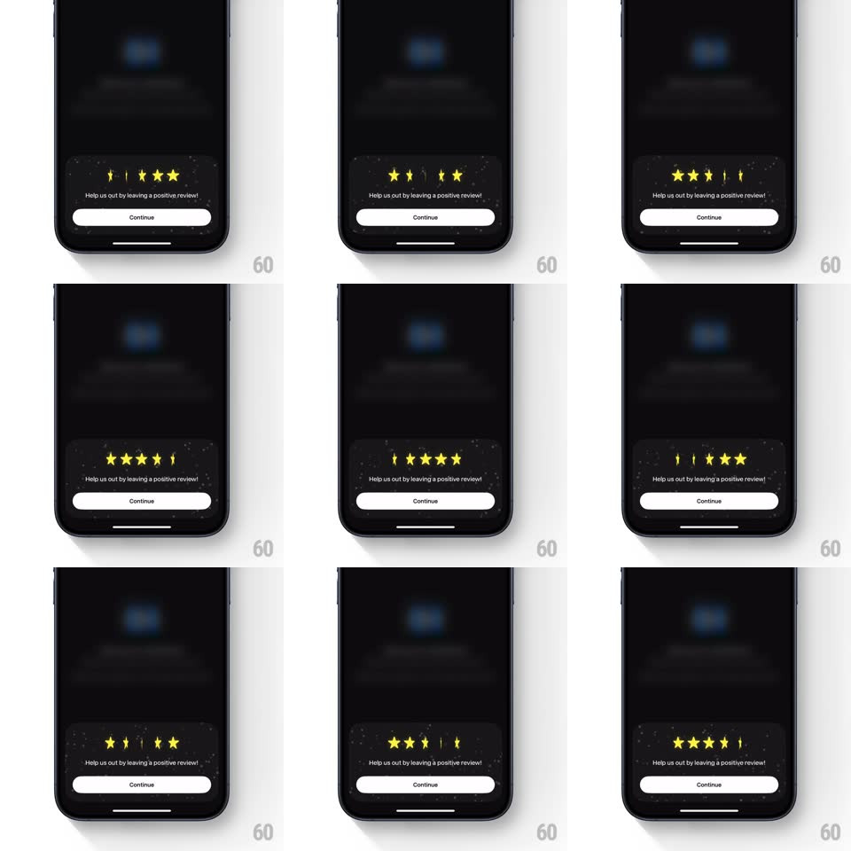

Media
Frame-by-frame

Rebuild this interaction 1:1: BlueNote's review prompt sheet - five rating stars in a dark bottom sheet play a looping staggered 3D spin: each star flips on its Y-axis and bounces, left to right in sequence, above the "Help us out by leaving a positive review!" ask and a Continue button.

Rebuild this interaction 1:1: BlueNote's review prompt sheet - five rating stars in a dark bottom sheet play a looping staggered 3D spin: each star flips on its Y-axis and bounces, left to right in sequence, above the "Help us out by leaving a positive review!" ask and a Continue button. ## Integration Integration: stack-agnostic spec - springs given as stiffness/damping, timed motions as duration + curve; map every value to your framework and animation library of choice. ## Scene Dark bottom sheet over a dimmed app screen. Centered row of five yellow stars with a faint sparkle texture behind them. Below: the review ask line and a white Continue button. ## Motion spec Pattern: looping staggered star flip. - Each star spins a full turn on its Y-axis (rotateY 0 -> 360, ~500ms, ease-in-out) with a vertical bounce (translateY 0 -> -10px -> 0) timed to the flip's midpoint. - Stars fire left to right with ~120ms stagger; after star 5 lands, a ~900ms pause, then the loop restarts. - Between passes the stars rest in a slight random tilt (~+/-8deg) so each loop feels re-tossed. - Sparkle texture twinkles faintly behind the stars (2-3 glints, slow fade in/out). - Text and Continue button stay static. ## Calibration - The stagger wave is the whole effect - even spacing, no rush; the pause between waves matters as much as the spin. - Bounce peaks exactly when the star is edge-on (90deg) to sell the 3D. ## Reduced motion Static star row; no spin, no twinkle. ## Don't miss - Stars rest tilted between waves, not reset to a grid-perfect row. - The flip axis is vertical (Y); a horizontal flip reads as a different, wrong effect.